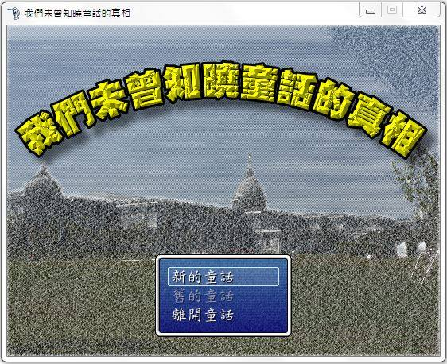
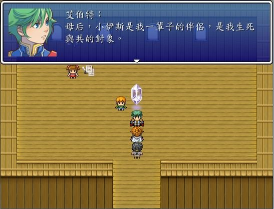

我們未曾知曉童話的真相v1 |
|
這款遊戲的起因，是因為我和朋友在那邊該想要做遊戲，然後他就和我討論了大方向的構想，剛好我正值黑暗的低潮期，所以故事基本上...細思恐極，怎麼黑暗怎麼來，所以這個遊戲應該是R18的，請先確認自己三觀正常不被影響再嘗試玩遊戲，感謝您。 好了，不廢話了，開始來介紹遊戲～ 這個遊戲的學名叫做「我們未曾知曉童話的真相」，又暱稱「黑暗童話」，如果有心想要試一下的話，這邊請→MG傳送門 它的世界觀是以童話故事為主，卻又不是一般的童話故事，融合了「白雪公主」、「天鵝湖」、「夜鶯」、「紅舞鞋」和「賣火財的小女孩」五個故事，一共分為四章，每個章節有四個結局，兩個表結局(Happy Ending和Bad Ending)，以及兩個相呼應表結局的裡結局。 故事開頭是一個奶奶說著童話故事，小女孩聽著聽著就睡著了，等她醒來，他發現自己身處一個奇妙的世界，她需要依次完成任務和解開謎題，才能回到原本的世界。 不過由於把謎題解法寫出來就沒有意義了，所以先付上一些遊戲截圖。 (陌阿柳自己說，其實有玩過的朋友表示，有些謎題太難了，根本搞不懂，還有一些劇情和互動比較薄弱，可以增加，雖然當時有打算修改，但是那時候我沒有很大的心力再做遊戲修改，所以就先放水流了，還是希望有時間的話可以做出v2版本啦！←劇本已經修改一些了 慣例來放個圖
↓開始畫面
 整個遊戲中我最喜歡的角色應該是王子，主要出現在天鵝湖的故事裡面，他是一個三觀不太正常的人，他覺得世界很美麗，也很喜歡動植物，但是他認為人類是有罪的，所以他因為自己是人類而感到痛苦，是一個充滿矛盾的角色。
↓天鵝湖的故事
 這大概是第一次我自己用別人寫好的軟體下去做遊戲，該說用遊戲引擎做遊戲的話會輕鬆許多嗎？之前用Allegro做的時候，幾乎每個功能都要自己寫(很遺憾的是那時候對於模組化這個東西不是很熟悉，我想現在寫起來應該結構會更好)。 不得不說RPG製作大師是一款還蠻成功的遊戲引擎，就算是沒有程式底子，只要邏輯清晰就可以製作出一款RPG遊戲，我倒覺得用這個引擎做遊戲的話，美術能力非常重要，無怪之前老師說，現在做遊戲其實看的是美術，程式反而不重要了，因為遊戲引擎越做越好。之前還聽過另外一個說法，RPG製作大師是給不會程式的人用的，沒什麼技巧，我倒是覺得啦！要用這個引擎做遊戲，程式邏輯還是要有的。 |
| by 陌阿柳 |